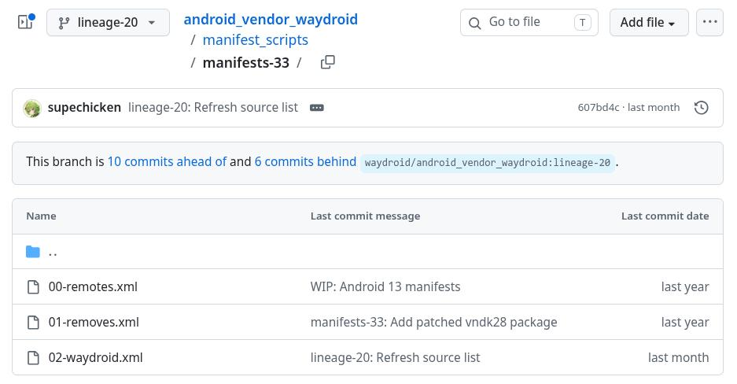
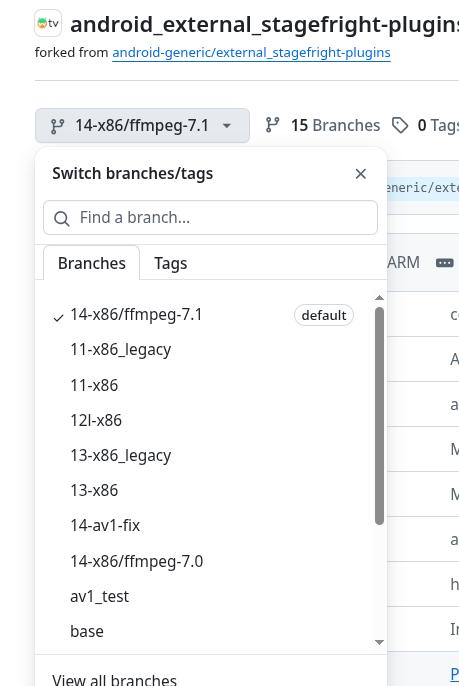

20260615
1. waydroid-atv building
从https://github.com/WayDroid-ATV/waydroid-androidtv-builds/blob/main/BUILDING.md(编译指南)获知：
Setup LOS source (for ATV 13)
repo init -u https://github.com/LineageOS/android.git -b lineage-20.0 --git-lfs
repo sync build/make
wget -O - https://raw.githubusercontent.com/WayDroid-ATV/android_vendor_waydroid/lineage-20/manifest_scripts/generate-manifest.sh | bash
从https://github.com/WayDroid-ATV/android_vendor_waydroid/blob/lineage-20/manifest_scripts/generate-manifest.sh获知：
sdkv=$(cat build/make/core/version_defaults.mk | grep "PLATFORM_SDK_VERSION :=" | grep -o "[[:digit:]]\+")
sdkv(20260615):
dash@home4500:/media/sda/testmesaredroid13$ pwd
/media/sda/testmesaredroid13
dash@home4500:/media/sda/testmesaredroid13$ cat build/make/core/version_defaults.mk | grep "PLATFORM_SDK_VERSION :="
PLATFORM_SDK_VERSION := 33
wget "${manifests_url}/00-remotes.xml" -O "${loc_man}/00-remotes.xml"
wget "${manifests_url}/01-removes.xml" -O "${loc_man}/01-removes.xml"
wget "${manifests_url}/02-waydroid.xml" -O "${loc_man}/02-waydroid.xml"
因此xml来自于https://github.com/WayDroid-ATV/android_vendor_waydroid/tree/lineage-20/manifest_scripts/manifests-33:

注意到:
<!-- Media -->
<project path="external/ffmpeg" name="Waydroid-ATV/android_external_ffmpeg" remote="ghub" revision="refs/heads/release/7.0-11" />
<project path="external/stagefright-plugins" name="Waydroid-ATV/external_stagefright-plugins" remote="ghub" revision="refs/heads/14-x86" />
编译中出现问题在于无法找到external_stagefright-plugins这个branch:

2. build waydroidatv
Steps:
cd /mnt/lineage/
export USE_CCACHE=1
export CCACHE_COMPRESS=1
export CCACHE_DIR="/ccache"
export CCACHE_EXEC=/usr/bin/ccache
export CCACHE_SLOPPINESS="file_macro,locale,time_macros,include_file_mtime,pch_defines,modules"
export CCACHE_HARDLINK=1
${CCACHE_EXEC} -M 50G
git config --global --add safe.directory "*"
. build/envsetup.sh
apply-waydroid-patches
Widevine L3 (remove ANDROID_USE_WIDEVINE := true from device/waydroid/waydroid/waydroid_tv_x86_64/lineage_waydroid_tv_x86_64.mk to disable it)
ARM translation layer support (remove ANDROID_USE_INTEL_HOUDINI := true from device/waydroid/waydroid/waydroid_tv_x86_64/lineage_waydroid_tv_x86_64.mk to disable it)
GApps (remove $(call inherit-product, vendor/gapps_tv/x86_64/x86_64-vendor.mk) from device/waydroid/waydroid/waydroid_tv_x86_64/lineage_waydroid_tv_x86_64.mk to disable it)
lunch lineage_waydroid_tv_x86_64-userdebug
make systemimage -j$(nproc --all)
make vendorimage -j$(nproc --all)
3. external_stagefright-plugins问题
Issue:
$ cat .repo/local_manifests/02-waydroid.xml | grep stage
<project path="external/stagefright-plugins" name="Waydroid-ATV/external_stagefright-plugins" remote="ghub" revision="refs/heads/14-x86/ffmpeg-7.0" />
[ 76% 459/598] including external/mesa/android/Android.mk ...
sed: external/libva/meson.build: No such file or directory
sed: external/libva/meson.build: No such file or directory
[ 94% 564/598] including system/sepolicy/Android.mk ...
system/sepolicy/Android.mk:87: warning: Be careful when using the SELINUX_IGNORE_NEVERALLOWS flag. It does not work in user builds and using it will not stop you from failing CTS.
[ 99% 597/598] finishing build rules ...
FAILED:
external/stagefright-plugins/codec2/Android.mk: error: "android.hardware.media.c2-ffmpeg-service (EXECUTABLES android-x86_64) missing android.hardware.media.c2-V1-ndk (SHARED_LIBRARIES android-x86_64)"
You can set ALLOW_MISSING_DEPENDENCIES=true in your environment if this is intentional, but that may defer real problems until later in the build.
external/stagefright-plugins/codec2/Android.mk: error: "android.hardware.media.c2-ffmpeg-service (EXECUTABLES android-x86_64) missing libcodec2_aidl (SHARED_LIBRARIES android-x86_64)"
You can set ALLOW_MISSING_DEPENDENCIES=true in your environment if this is intentional, but that may defer real problems until later in the build.
build/make/core/main.mk:1130: error: exiting from previous errors.
02:26:52 ckati failed with: exit status 1
#### failed to build some targets (04:29 (mm:ss)) ####
AOSP 13 的硬件接口主要定义在 hardware/interfaces 目录下。你可以直接去搜索该目录下声明了哪些模块名：
root@1ff83cc2326e:/mnt/lineage# find hardware/interfaces/media/ -name "Android.bp" | xargs grep -E "name:\s*\"android\.hardware\.media\."
hardware/interfaces/media/omx/1.0/Android.bp: name: "android.hardware.media.omx@1.0",
hardware/interfaces/media/c2/1.2/Android.bp: name: "android.hardware.media.c2@1.2",
hardware/interfaces/media/c2/1.1/Android.bp: name: "android.hardware.media.c2@1.1",
hardware/interfaces/media/c2/1.0/Android.bp: name: "android.hardware.media.c2@1.0",
hardware/interfaces/media/bufferpool/2.0/Android.bp: name: "android.hardware.media.bufferpool@2.0",
hardware/interfaces/media/bufferpool/1.0/Android.bp: name: "android.hardware.media.bufferpool@1.0",
hardware/interfaces/media/c2 目录下的输出：
android.hardware.media.c2@1.0
android.hardware.media.c2@1.1
android.hardware.media.c2@1.2
带有 @ 符号加数字版本号（如 @1.2）的库，代表这是谷歌旧一代的 HIDL 架构接口。 而报错信息中寻找的 android.hardware.media.c2-V1-ndk（带有 -V1-ndk），是谷歌在新版本 Android 中全面推行的 AIDL 架构接口。
当前编译的 LineageOS/AOSP 13 源码树中，Codec2 媒体底层使用的是 HIDL 架构（最高到 @1.2）；而你从 GitHub 拉取的 external/stagefright-plugins 分支（14-x86/ffmpeg-7.0）是为 Android 14 准备的，它已经完全切换到了 AIDL 架构，所以它在死磕寻找 -V1-ndk。
切换成13分支:
$ cat .repo/local_manifests/02-waydroid.xml | grep stag
<project path="external/stagefright-plugins" name="Waydroid-ATV/external_stagefright-plugins" remote="ghub" revision="refs/heads/13-x86" />
root@1ff83cc2326e:/mnt/lineage# export REPO_URL='https://mirrors.bfsu.edu.cn/git/git-repo'
root@1ff83cc2326e:/mnt/lineage# repo sync -d --force-sync external/stagefright-plugins
Syncing: 100% (1/1), done in 1.355s
Finalizing sync state...
repo sync has finished successfully.
重新执行source build/envsetup, apply patch,lunch, make systemimage, 这次可以直接编译。
开始编译vendorimage时的问题：
3_x86_64_shared/obj/hardware/intel/common/libva/va/va.o hardware/intel/common/libva/va/va.c 14:05 [84/29191]
hardware/intel/common/libva/va/va.c:143:37: error: unused parameter 'user_context' [-Werror,-Wunused-parameter]
static void default_log_error(void *user_context, const char *buffer)
^
hardware/intel/common/libva/va/va.c:154:36: error: unused parameter 'user_context' [-Werror,-Wunused-parameter]
static void default_log_info(void *user_context, const char *buffer)
^
hardware/intel/common/libva/va/va.c:1512:17: error: unused parameter 'context' [-Werror,-Wunused-parameter]
VAContextID context, /* in */
解决:
$ vim hardware/intel/common/libva/Android.bp
添加:
"-Wno-unused-parameter",
cflags: [
"-Werror",
"-Winvalid-pch",
"-DSYSCONFDIR=\"/vendor/etc\"",
"-DLOG_TAG=\"libva\"",
"-Wno-unused-parameter",
],
Issue:
va_close_display_drm(VADisplay va_dpy)
^
external/libva-utils/common/va_display_drm.c:122:24: error: unused parameter 'va_dpy' [-Werror,-Wunused-parameter]
VADisplay va_dpy,
^
external/libva-utils/common/va_display_drm.c:123:24: error: unused parameter 'surface' [-Werror,-Wunused-parameter]
VASurfaceID surface,
^
external/libva-utils/common/va_display_drm.c:124:24: error:
解决:
$ vim external/libva-utils/Android.bp
......
cflags: ["-DHAVE_VA_DRM", "-Wno-unused-parameter",],
......
Issue:
hardware/waydroid/hwcomposer/wayland-hwc.cpp:1486:9: error: unused variable 'touch_id' [-Werror,-Wunused-variable]
int touch_id[2];
^
1 error generated.
06:27:56 ninja failed with: exit status 1
解决:
$ vim hardware/waydroid/hwcomposer/Android.bp
......
cflags: [
"-DLOG_TAG=\"hwcomposer\"",
"-Wall",
"-Werror",
"-Wno-unused-parameter",
],
vim hardware/waydroid/hwcomposer/wayland-hwc.cpp
找到第 1486 行左右的定义：
// 修改前
int touch_id[2];
修改为：
// 修改后
[[maybe_unused]] int touch_id[2];
Issue:
Dependency libva found: NO. Found . but need: '>= 1.8.0'
Run-time dependency libva found: NO
meson.build:745:9: ERROR: Dependency lookup for libva with method 'pkgconfig' failed: Invalid version, need 'libva' ['>= 1.8.0'] found '.'.
A full log can be found at /mnt/lineage/out/target/product/waydroid_tv_x86_64/obj/MESON_MESA3D/build/meson-logs/meson-log.txt
WARNING: Running the setup command as `meson [options]` instead of `meson setup [options]` is ambiguous and deprecated.
06:41:31 ninja failed with: exit status 1
#### failed to build some targets (35 seconds) ####
解决:
vim external/mesa/meson.build
_dep_va_name, version : '>= 1.8.0',
改为：
_dep_va_name, version : '>= .',
Issue:
../src/intel/compiler/jay/jay_ir.h:1167:52: warning: '_Static_assert' with no message is a C2x
extension [-Wc2x-extensions]
static_assert(ARRAY_SIZE(block->successors) == 2);
^
, ""
../src/intel/compiler/jay/jay_to_binary.c:366:7: error: expected expression
bool hi = simd_offs ? true : jay_deswizzle_odd_src2_hi(I);
^
/mnt/lineage/prebuilts/clang/host/linux-x86/clang-r450784d/lib64/clang/14.0.6/include/stdbool.
h:15:14: note: expanded from macro 'bool'
#define bool _Bool
^
../src/intel/compiler/jay/jay_to_binary.c:368:66: error: use of undeclared identifier 'hi'
byte_offset(to_brw_reg(f, I, simd_offs, 0, false), hi ? 64 : 0));
^
4 warnings and 2 errors generated.
[893/3248] Compiling C object src/intel/isl/libisl_per_hw_ver110.a.p/isl_surface_state.c.o
解决:
vim external/mesa/src/intel/compiler/jay/jay_to_binary.c
从：
365 case JAY_OPCODE_DESWIZZLE_ODD:
366 bool hi = simd_offs ? true : jay_deswizzle_odd_src2_hi(I);
367 brw_MOV(p, dst,
368 byte_offset(to_brw_reg(f, I, simd_offs, 0, false), hi ? 64 : 0));
369 break;
改为：
365 case JAY_OPCODE_DESWIZZLE_ODD:
366 {
367 // 使用 { } 包裹 case 逻辑，创建独立的作用域
368 int hi_val = 0;
369 if (simd_offs) {
370 hi_val = 1;
371 } else {
372 hi_val = jay_deswizzle_odd_src2_hi(I) ? 1 : 0;
373 }
374
375 brw_MOV(p, dst,
376 byte_offset(to_brw_reg(f, I, simd_offs, 0, false), hi_val ? 64 : 0));
377 break;
378 }